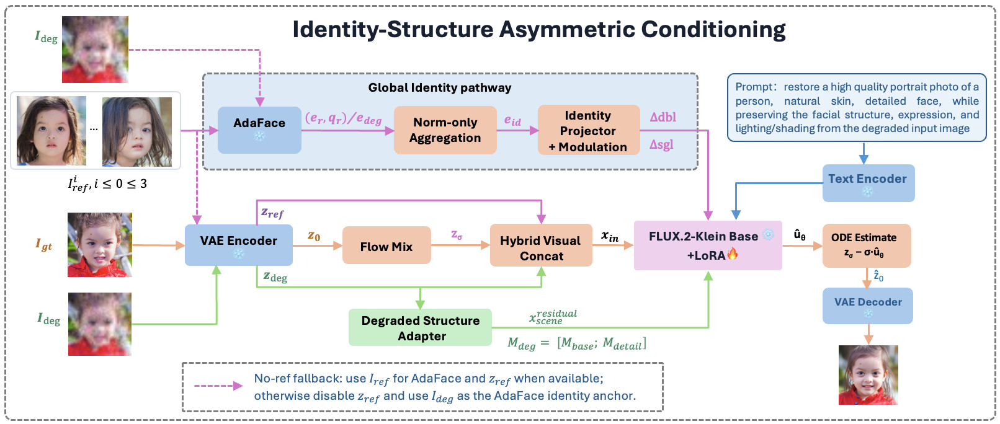

IConFace: Identity-Structure Asymmetric Conditioning for Unified Reference-Aware Face Restoration
Abstract
Blind face restoration is highly ill-posed under severe degradation, where identity-critical details may be missing from the degraded input. Same-identity references reduce this ambiguity, but mismatched pose, expression, illumination, age, makeup, or local facial states can lead to overuse of reference appearance. We propose IConFace, a unified reference-aware and no-reference framework with identity--structure asymmetric conditioning. References are distilled into a norm-weighted global AdaFace identity anchor for image-only modulation, while the degraded image is reinforced as the spatial structure anchor through low-rank residuals and block-wise degraded cross-attention with two-route memory. The resulting single checkpoint exploits references when available and falls back to no-reference restoration when absent, improving identity consistency, fine-detail recovery, and degraded-only restoration quality in a unified model.
- A unified optional-reference formulation where one checkpoint supports reference-aware and no-reference restoration through asymmetric identity--structure conditioning.
- Lightweight pathways that use norm-weighted AdaFace modulation for reference identity and low-rank residuals with two-route degraded memory for structure and detail anchoring.
- Extensive results showing improved reference-aligned identity consistency, fine-detail recovery under severe degradation, and strong no-reference perceptual quality.
Method Overview
IConFace is built on the FLUX.2-klein-base-4B hybrid concat restoration backbone. The main sequence concatenates noisy scene tokens, degraded-image tokens, and optional reference tokens, while no-reference mode removes the reference segment rather than duplicating placeholders. On top of the backbone, a global identity pathway aggregates valid references into a norm-weighted AdaFace anchor for image-only modulation, and a degraded structure pathway reinforces the spatially aligned degraded observation with low-rank input residuals plus block-wise degraded cross-attention. The two-route memory separates base structure from local detail so the model can use reference identity evidence without copying mismatched pose, expression, illumination, age, makeup, or local facial state.

Main Paper Figure Panels
Qualitative figure panels from the AAAI main paper, including reference-aware comparisons, no-reference comparisons, and ablation examples.
Supplementary Visual Evidence
Supplementary panels are regenerated from AAAI_IConface_supp.tex and its figure input: selected reference--GT gap diagnostics, four reference-aware datasets, five no-reference datasets, and three reference-aware ablation datasets.
BibTeX
@article{niu2026iconface,
title={IConFace: Identity-Structure Asymmetric Conditioning for Unified Reference-Aware Face Restoration},
author={Niu, Axi and Zhang, Jinyang and Qing, Senyan},
journal={arXiv preprint arXiv:2605.02814},
year={2026},
eprint={2605.02814},
archivePrefix={arXiv},
primaryClass={cs.CV},
doi={10.48550/arXiv.2605.02814},
url={https://arxiv.org/abs/2605.02814}
}